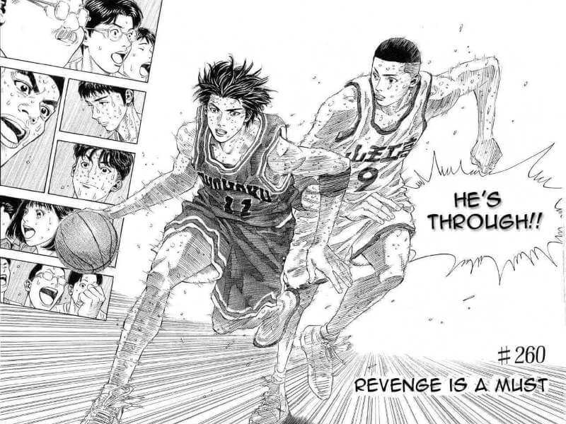
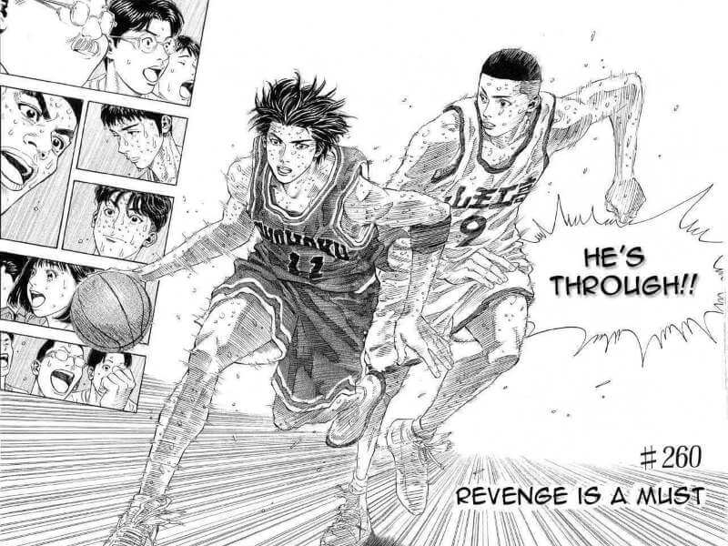

Introducción
Slam Dunk (スラム ダンク?) es un manga escrito e ilustrado por Takehiko Inoue. La trama sigue a Hanamichi Sakuragi un estudiante de preparatoria que decide practicar baloncesto para conquistar a Haruko Akagi, una chica de la cual él está enamorado.
El manga fue publicado en Weekly Shōnen Jump de 1990 hasta 1996, y ha vendido más de 121 millones de copias solo en Japón, lo que la convierte en una de las series de manga más vendidas de la historia. En 2010, Inoue recibió elogios especiales de la Asociación de baloncesto de Japón por ayudar a popularizar el baloncesto en ese mismo país.
Historia
Slam Dunk narra la historia de la evolución como jugador de baloncesto y como persona de su protagonista, Hanamichi Sakuragi, un joven de 15 años problemático y pandillero con un impresionante registro de rechazos amorosos a sus espaldas. Al inicio de la serie, Hanamichi no sabe nada de lo que es el deporte, o más que nada del baloncesto.
Al comienzo de la obra vemos a Sakuragi, un temible y violento matón de secundaria recién llegado al instituto Shōhoku y abatido por su último fracaso sentimental. A este hecho se le atribuye que la última chica que le gustó estaba enamorada de un jugador de baloncesto, lo cual le provoca un profundo rechazo hacia ese deporte.
Todo cambia cuando conoce a Haruko Akagi, de la que se enamora instantáneamente y a la que intenta impresionar por medio del baloncesto gracias a su gran estatura y sorprendente condición física innata. Así es como Hanamichi empieza a tener interés por el baloncesto, y aprende poco a poco. Pero al empezar no sabía las reglas, era principalmente un presumido.
Recomendación
Slam Dunk tiene varias cosas que destacan, como por ejemplo sobre las que hablaré ahora. Una de ellas es el espectacular arte de la serie y lo detallada que es, incluso las gotas de sudor están bien dibujadas y junto a las expresiones de los personajes llegas a sentir su cansancio.
Como dije, sus personajes también son muy buenos. Un ejemplo es uno de los personajes principales, Hisashi Mitsui. El llegó a ser un MVP (mejor jugador de la temporada). Pero cuando entró a Shohoku se lesionó, y al ver como jugaban y ganaban sin él empezó a dejar de jugar. Al final con tar de rechazar el baloncesto, incluso se metió a la delincuencia. Pero al final se da cuenta de lo que realmente le hacía feliz, y cambia de nuevo. El desarrollo de este personaje y el mensaje que da me parece de las mejores cosas de esta serie.
Otra de las grandes cosas de esta serie, es como su autor Tahekiho Inoue habla de la importancia del baloncesto como deporte. Es algo que se nota porque como ya dije anteriormente, la popularidad del baloncesto en Japón aumentó drásticamente gracias a Slam Dunk. En definitiva, es una serie que recomendaría a todo el mundo, sea fan del baloncesto y del deporte o no. Un gran mensaje que me dio es que si jugar baloncesto me hacía feliz, debería hacerlo sin importar las excusas.
Otros personajes principales
Hanamichi Sakuragi
Kaede Rukawa
Takenori Akagi
Ryota Miyagi
Galería


 
